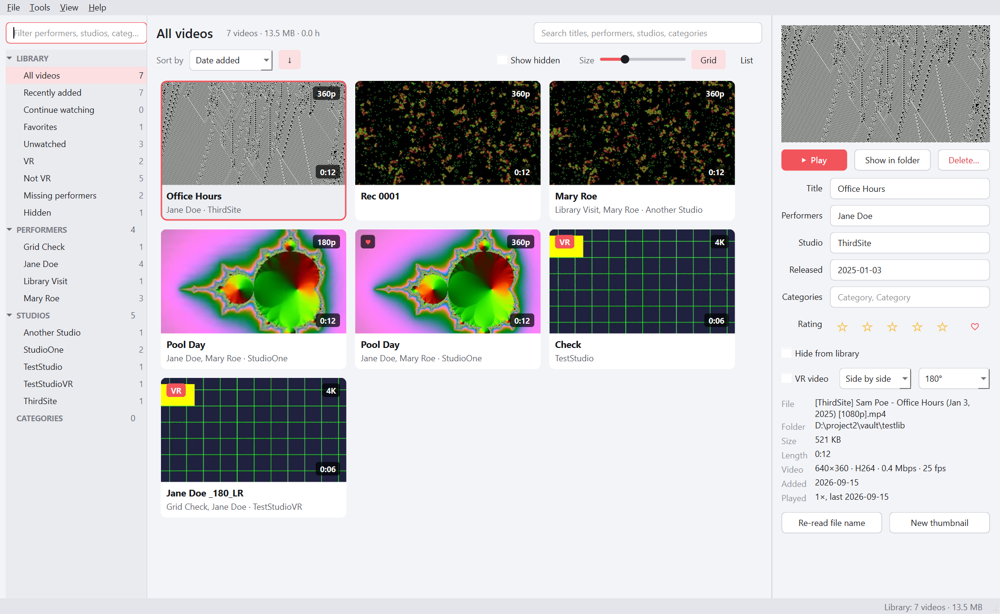

A library and player for your porn collection
Point it at your folders and it works out performers, studios, dates and categories from the names you already have. It plays everything, VR included, finds duplicates, and helps you clear out what you no longer want. Everything stays on your PC.
Free, with every feature. No account, no ads, no telemetry. Open source under GPL-3.0.

What it does
Built for a large collection that grew without a plan: thousands of files, inconsistent names, several drives.
Sorts itself out
Reads file and folder names to fill in performers, studios, release dates and categories. Works on local drives and network shares.
Plays anything
Built on mpv, with hardware decoding. Resumes where you stopped and keeps favourites, ratings and play counts. MPC-style shortcuts.
VR done properly
180°, 360° and fisheye videos are detected and shown as a normal flat picture. Drag to look around and scroll to zoom. No more two warped halves.
Finds duplicates
Catches identical copies, and the same scene re-encoded at another resolution. The lower-quality copy is selected for deletion.
Tidies up names
Suggests merging spellings of the same performer and spots titles that were mistaken for names. Your own edits are never overwritten.
Cleanup mode, and a safe delete
Watch, then press one key to keep or delete, and it moves to the next. Deleted videos go to a hidden trash on the same drive until you empty it.
Watch on your Quest, phone or TV
BlueShelf can serve your library on your own network. Nothing goes over the internet.
- Browse by performer in the headset browserOpen an address in the Quest browser and your whole library is there. Tap VR and the scene wraps around you.
- Delete while you watchPull the trigger for a panel with play, seek, favourite and delete. No VR player lets you get rid of a scene mid-watch; this does.
- DLNA for DeoVR, Skybox and HereSphereBlueShelf appears in their media-server list, laid out like the sidebar. VR scenes open in the right projection by themselves.
- Passthrough copiesTurn an ordinary VR scene into a passthrough one, so the performer appears in your room. Uses the separate VRAutoMatte tool and an NVIDIA card, and can split the work across several PCs.
Works with
Anything with a browser on your network, and anything that reads a DLNA media server.
Sharing is off until you turn it on. The browser page asks for a passcode that is part of its address, and videos you hide are never shared.
Private by design
A tool like this only works if you can trust it. So it is built to need nothing from you.
No account, no internet, no telemetry
Nothing phones home. It works the same with the network cable pulled out.
Your files are never touched
Videos are never renamed, modified or moved. What BlueShelf learns about them is kept separately in %LOCALAPPDATA%\BlueShelf.
Backups in one small file
Performers, ratings, favourites, resume points and thumbnails are backed up once a week, and restore onto a new PC.
Open source
Released under the GPL-3.0, with the source published alongside every release. Read it, or build it yourself.
Install
Windows 10 or 11, 64-bit. About 400 MB of disk space, and a reasonably modern graphics card for smooth 4K and 8K VR.
- Download the installer
BlueShelfSetup-0.1.0.exefrom the releases page. It installs for your user only and does not ask for administrator rights. - Get past SmartScreen
Windows shows “Windows protected your PC”. Click More info, then Run anyway.
- Add a video folder
A local drive or a network share such as
\\nas\videos. The first scan takes a while. It only happens once.
Why the warning? The installer is not code-signed. Signing certificates cost hundreds a year, which is more than a free tool can justify.
To check the download first, compare its SHA-256 with the one in the release notes:
Get-FileHash BlueShelfSetup-0.1.0.exe -Algorithm SHA256
Questions
The short answers. The README on the releases page has the long ones.
Does it download anything, or look scenes up online?
No. Names are worked out from patterns in your file names, not looked up online, so unusual naming may need correcting by hand. Tools → Review names helps with that, and your corrections are kept.
My antivirus flagged it. Is it safe?
Apps packaged this way are sometimes flagged, and unsigned ones more often. The source for every release is published, so you can read it or build the installer yourself. You can also compare the SHA-256 against the release notes.
Mac or Linux?
Not at the moment. BlueShelf is Windows only.
Will my Quest play 8K?
Usually, but very high-bitrate 8K can be more than a headset browser can decode. DeoVR over DLNA tends to cope better with the biggest files.
Where is my data kept?
In %LOCALAPPDATA%\BlueShelf on your PC. Uninstalling leaves your videos exactly where they were.